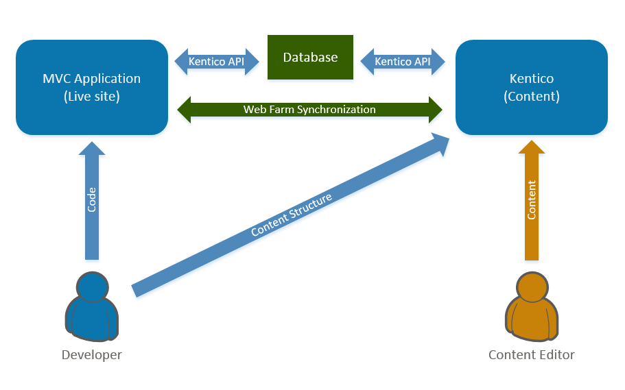

MVC development
This is the first page of the Kentico 11 MVC development tutorial.
You will learn about:
MVC development model overview
Kentico MVC sites use two separate web applications – an MVC application that displays the live site and a Kentico application for the website's administration.
MVC application – the front-facing site is presented by a standard ASP.NET MVC application, which brings you all the freedom and other goodies provided by the ASP.NET MVC framework. The Kentico API is integrated into the MVC application using NuGet packages.
Kentico application – serves as a content repository and provides the administration interface, which includes the default functionality such as content editing or user management, as well as any custom modules. The administration interface is built on ASP.NET Web Forms.
Shared database – both applications share the same database and use the Kentico API to work with the data. Web farm functionality is used to synchronize changes between the applications, for both data cached in the memory (e.g., settings or page content) and files (e.g., media libraries).
How does the live site work?
Live site web users only interact with the MVC application. When a user requests a page through their browser, the MVC application matches the page URL to a corresponding route. The route targets a controller action that processes the request. Typically, the MVC application uses the Kentico API and generated classes from the Kentico application to retrieve page data, and prepare appropriate models that pass the data to corresponding views. The views define the page output that is displayed in the browser.
How does the back-end work?
Editors manage the content of the website in the Kentico administration interface, mainly in the Pages application. They use content only pages and enter values into page fields based on the content structure designed by the website's developers. The developers display the content on the live site via the MVC application through the use of the Kentico API.
How are the applications synchronized?
The MVC application and Kentico application should always be configured to run as servers in a web farm in automatic mode. This configuration is possible because both applications use the same database and perform operations through the Kentico API. The web farm synchronization ensures that data and file changes made by one of the applications are immediately reflected in the other.
For example, when a website editor changes the text of a page in the administration interface, the data is updated in the database. The Kentico application then initiates a synchronization task, which the MVC application runs to invalidate the matching data in its cache. When a new request for the content comes, the MVC application serves the updated content from the database. The same process works for site settings and other values configured through the administration interface, as well as files.
The following scheme summarizes the architecture and data flow of a Kentico MVC site.

How does licensing work?
If you run the MVC live site and Kentico administration applications on different domains, you need to acquire licenses for both domains. However, you only need to purchase a license for the MVC site and the additional license for the Kentico administration is provided for free. Find out more about licensing for MVC applications in the Kentico documentation.
The benefits of using Kentico MVC
The following table sums up the benefits of the MVC development model
|
Developers |
Content editors |
|
|
MVC Tutorial sequence
To get the best experience out of this short tutorial, follow the sequence of the pages in the specified order: